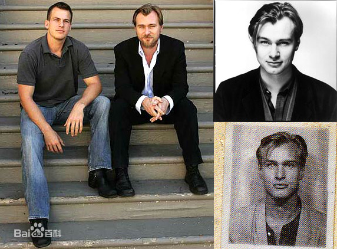

克里斯托弗·爱德华·诺兰
英文：Christopher Edward Nolan

是一名英国男导演、编剧及监制。他的十部电影在全球获得超过47亿美元的票房。诺兰的电影都围绕哲学社会学的概念、探索人类的道德、时间与记忆理念。使用后设小说的元素、时空变化、唯我论、非线性叙事、视觉语言和叙事元素也是诺兰常用的手法。比起在室内工作诺兰较喜欢外景拍摄，他常使用实际效果来拍摄，而不用电脑成像。此外，他也是一个胶卷电影的支持者，这也是他用来拍摄电影的方式。
职业生涯
-
1996年，诺兰拍了首部故事片《追随》。1998年，《追随》在旧金山电影节上放映并受到关注。1999年，Zeitgeist公司在小范围内发行了《追随》。
-
2000年，来到好莱坞发展的诺兰指导并编剧影片《记忆碎片》，被称为邪典之作，获金球奖和奥斯卡奖的最佳编剧奖提名。
-
2005年，《蝙蝠侠：侠影之谜》正式发行，获得票房大胜并入选当年夏季卖座影片前三甲，好评如潮，人气旺盛，很多人将其与1989年版蝙蝠侠相提并论。
-
2006年7月下旬，官方证实了由诺兰执导《黑暗骑士》（The Dark
Knight）一片，乔纳森·诺兰根据诺兰和大卫·S·高耶的剧本完成了最终的剧本创作，在12月14日推出。
-
2010年，执导以梦境为主题的科幻电影《盗梦空间》。这是诺兰在商业领域内的一次全新尝试。该片获第37届美国土星奖电影类最佳导演、最佳编剧等奖。
-
2012年7月20日，执导蝙蝠侠终结篇《蝙蝠侠前传3：黑暗骑士崛起》上映。该片美国境内票房入账4.312亿美元，海外票房5.74亿美元，总计10.05亿美元，成为影史上第13部票房过10亿美元的影片。
主要作品
- 《追随》（1998）
- 《记忆碎片》（2000）
- 《失眠症》（2002）
- 《蝙蝠侠：侠影之谜》（2005）
- 《致命魔术》（2006）
- 《蝙蝠侠：黑暗骑士》（2008）
- 《盗梦空间》（2010）
- 《蝙蝠侠：黑暗骑士崛起》（2012）
- 《星际穿越》（2014）
- 《敦刻尔克》（2017）
- 《信条》（2020）
- 《欧本海默》（2023）
个人生活
克里斯托弗·诺兰的父亲是英国人，做广告文案工作。母亲是美国人，从事乘务员工作。
克里斯托弗·诺兰上有兄长马修，下有弟弟乔纳森·诺兰是一名编辑。由于父母的关系，兄弟三人从小就在英、美两国之间奔波。

《追随》的成功赢得了艾玛·托马斯的芳心，两人是大学同学，克里斯托弗·诺兰与艾玛·托马斯在伦敦读大学时相恋，毕业之后于1997年结婚，拥有三个孩子和一家制作公司，一家人现居加利福尼亚州洛杉矶。